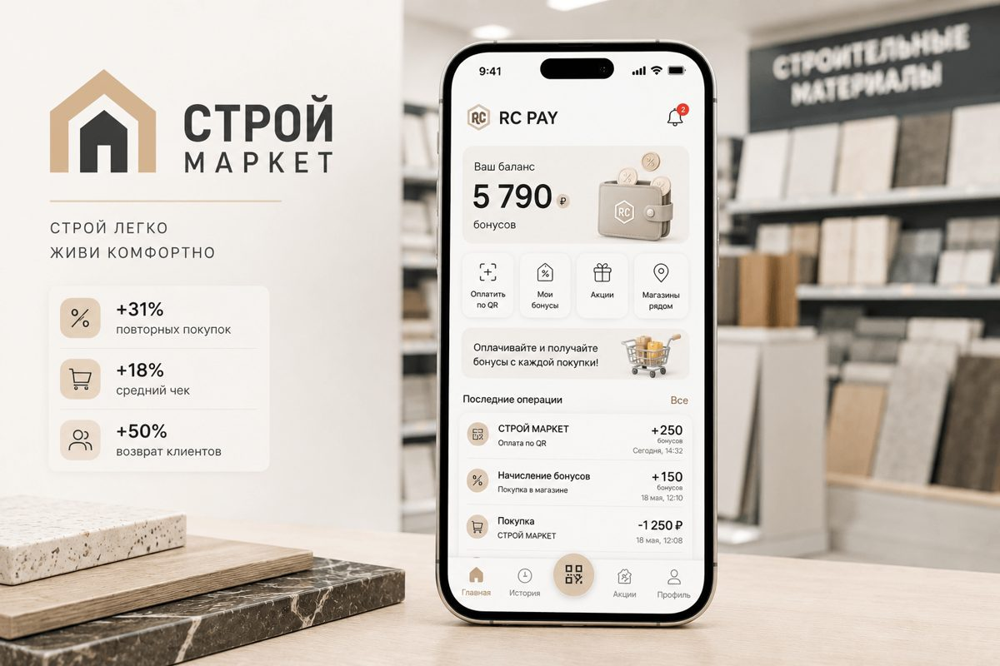
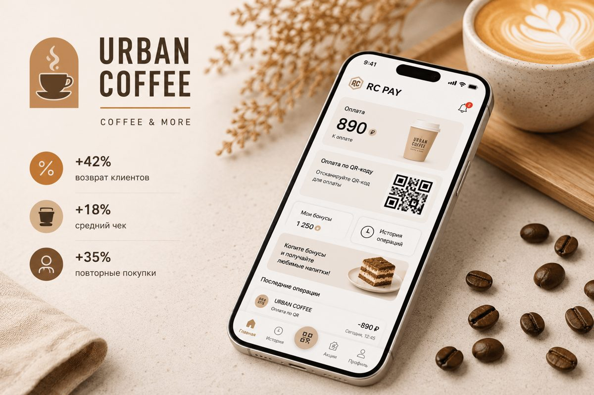
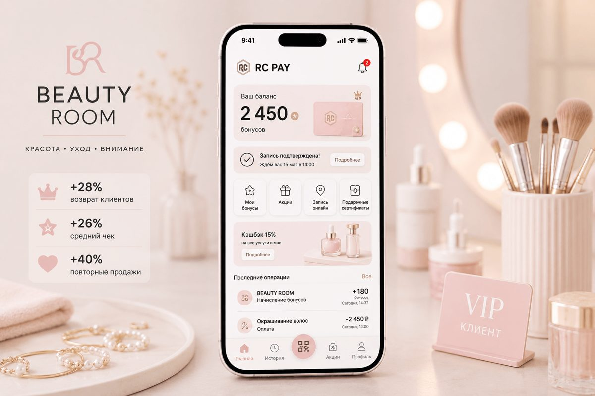

Александр Колмаков
Решения, стратегия, развитие
Программы лояльности RC CITY и RC PAY, удержание клиентов, рост повторных продаж и среднего чека. Работает по всей России, база — Сибирь и Дальний Восток.
Главная / Команда
KONTURBIZ — команда, которая внедряет RC CITY и RC PAY: от диагностики и стратегии до инженерии и бренда. Работаем по всей России, фокус — Сибирь и Дальний Восток.
Под каждую задачу собираем небольшую команду: стратег по лояльности, архитектор решений, инженер, специалист по бренду и автор смыслов. Единая точка входа — Александр Колмаков, остальные эксперты подключаются по задаче.
Решения, стратегия, развитие
Программы лояльности RC CITY и RC PAY, удержание клиентов, рост повторных продаж и среднего чека. Работает по всей России, база — Сибирь и Дальний Восток.
Архитектура и системное мышление
Цифровизация бизнеса, автоматизация, проектирование цифровой инфраструктуры.
Инженерия и реализация
CRM, интеграции, автоматизация, надёжная техническая реализация.
Бренд и коммуникация
Брендинг, сайты, визуальная идентичность, позиционирование.
Смыслы и содержание
Формулирование смыслов, контент, пользовательский опыт, коммуникационные стратегии.
Состав команды зависит от задачи: для роста повторных продаж нужны стратегия, настройка лояльности и аналитика, для запуска новой точки — ещё бренд, сайт и учёт.
Диагностика точек оттока, стратегия удержания, настройка программы лояльности, автоматизация и аналитика. Участвуют: Колмаков, Разумовский, Белов.
Диагностика и позиционирование, бренд и коммуникация, сайт и привлечение, учёт, платежи, аналитика. Участвуют: Колмаков, Северин, Белов, Вень.
RC CITY — кабинет предпринимателя для программы лояльности: баллы, аналитика, клиенты и карты Wallet. RC PAY — приложение покупателя, где он копит и тратит баллы у партнёров. Вместе они подключают точку к сети более 20 тысяч торговых точек (данные компании).
Начисление и списание баллов, аналитика продаж и клиентов, тарифы от 0 ₽.
Подробнее →ПродуктЦифровая карта лояльности в телефоне клиента: баланс, история операций и предложения партнёров.
Подробнее →Локальная карта работает в одной точке, а клиент RC PAY копит баллы у многих партнёров и тратит их у вас. Для бизнеса это приток покупателей без отдельной рекламы и лишний повод вернуться. Итог зависит от ниши, трафика и качества внедрения.
Внедрение занимает четыре шага: анализ ситуации, подбор механики, запуск с обучением сотрудников и сопровождение после старта.
Кроме лояльности, команда помогает с запуском и поддержкой бизнеса: господдержка, регистрация ИП и счёт, диагностика, расчёт окупаемости, аудит локации, бизнес-план и бренд. Это единая точка входа вместо нескольких подрядчиков.
Подбор актуальных программ и льгот под ваш бизнес.
Подробнее →УслугаОформление и подключение финансовых инструментов.
Подробнее →ДиагностикаДиагностика KONTURSCAN: 59 практик, уровень зрелости, приоритеты.
Подробнее →КалькуляторПрогноз экономики программы до запуска, бесплатно.
Подробнее →АудитОценка трафика, проходимости и потенциала места.
Подробнее →УслугаПлан запуска и развития, в том числе под господдержку.
Подробнее →БрендВизуальная идентичность и позиционирование.
Подробнее →Ниже демонстрационные макеты приложения RC PAY для строительного магазина, кофейни и салона красоты. Это иллюстрации сценария, а не результаты клиентов.



Показаны демонстрационные примеры использования системы лояльности. Фактические результаты зависят от ниши, региона и качества внедрения.
Подключите RC CITY или задайте вопрос партнёру — подскажем тариф и механику под вашу точку.
Оставьте заявку на консультацию: команда разберёт ваш бизнес, подберёт механику и тариф и поможет запустить программу.
Не всегда. Баллы можно начислять и списывать в приложении RC KASSA на смартфоне. Нужна ли замена кассы, зависит от схемы подключения.
Да. Есть бесплатный тариф «Лайт», а механику и тариф подбирают под нишу и средний чек.
Вы заранее видите прогноз окупаемости и эффекта от программы, чтобы решать по цифрам. Это прогноз, а не гарантия.
Команда сопровождает проект: помогает разбирать результаты, настраивать механику и масштабировать программу.
Напишите на почту, позвоните или напишите в MAX — ответим и подскажем, с чего начать.